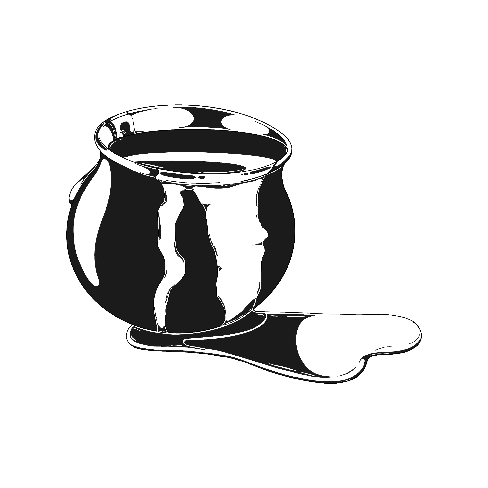
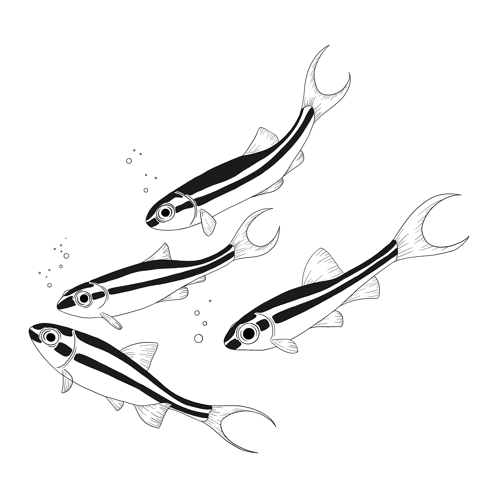
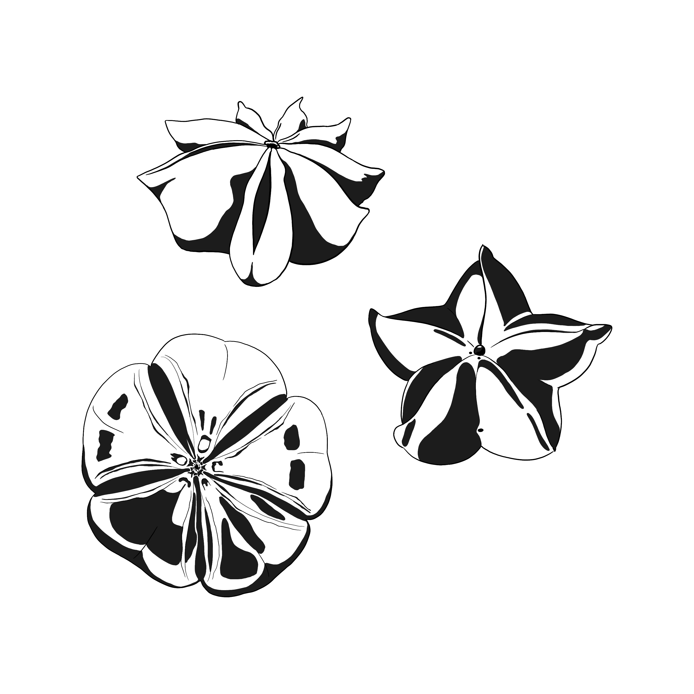
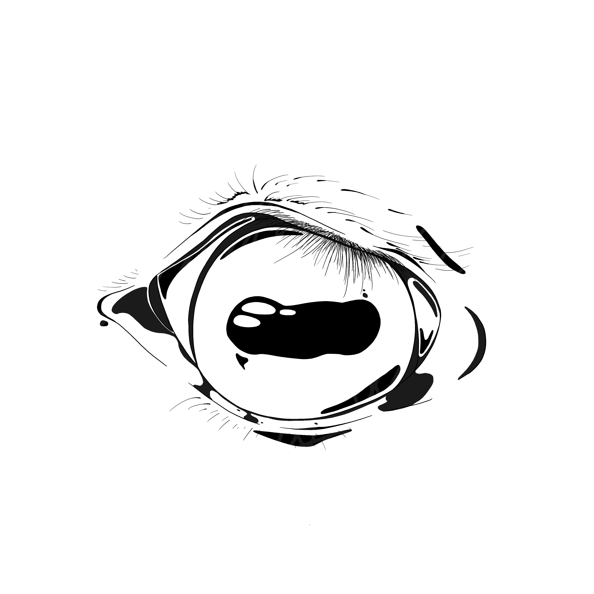

Moonglade Poetry is a queer, gothic poetry collective centred around the major arcana tarot cards.

Subcutaneous by Jem-Dara Glogauer

Swallow the Star by Jack Weissenberg

Star Rot by Tayla Paige van Sittert

Taxidermy by TJ Badrudeen
Moonglade Poetry is a queer, gothic poetry collective and zine dedicated to platforming new poets and celebrating the witchy, sapphic, esoteric, and weird. Each zine features 13 poems inspired by a major arcana tarot card, accompanied by a public reading. The launch of the first Moonglade issue, "The Star", will take place on 13 June 2026 at KAYA Café!